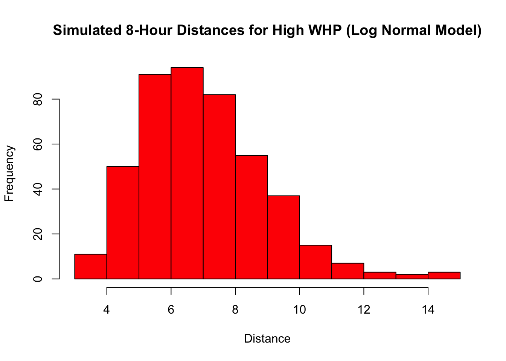

Read whp_raw_sample.csv using readr, 2) Store in an object called county_raw, 3) Run nrow and table to verify data structure, 4) Explain what is in the data.
library(readr) # Loads readrlibrary(dplyr)
Attaching package: 'dplyr'
The following objects are masked from 'package:stats':
filter, lag
The following objects are masked from 'package:base':
intersect, setdiff, setequal, union
county_raw <-read_csv("whp_raw_sample.csv") # Loads the dataset into an object
Rows: 150000 Columns: 4
── Column specification ────────────────────────────────────────────────────────
Delimiter: ","
chr (2): county, county_fips
dbl (2): whp, cell_area_km2
ℹ Use `spec()` to retrieve the full column specification for this data.
ℹ Specify the column types or set `show_col_types = FALSE` to quiet this message.
Had to consult AI to help me with this code chunk. Forgot to put the quotation marks around the file name which made it fail to load.
The dataset has four columns whp, county, county_fips, and cell_area_km2. It classifies what the wildfire risk is for a given area in a given county.
1.2 Basic Data Audit Summaries
Create a summary of the data using dplyr summarize function and stoer that in a new object. Report the number of rows, number of missing values, minimum and maximum value of cell_area_km2.
There are 150000 rows in the dataset, 0 missing values, and the minimum area is 0.0575977 and the maximum area is 0.0576027. Each of the rows areas are close to each other.
1.3 Compute WHP quantile edges
Use quantile() to compute the quantiles’ of the whp column of the data and store in e.
The quantiles’ show the distribution of the data for example the lowest 25% have a Wildfire Hazard Potential of 130.7305. This categorizes the data so that we can add labels to verbally communicate the risk.
To complete this task I needed to refer to previous notes.
1.4 Add a categorical WHP risk label
Create a new data frame called county_cats by using mutate() and case_when() that categorizes the risk based on the percentile from Very Low to Ultra.
# A tibble: 7 × 2
Category n
<ord> <int>
1 Very Low 37500
2 Low 37497
3 Moderate 37502
4 High 22501
5 Very High 7500
6 Extreme 6000
7 Ultra (Top 1%) 1500
When using case_when() it compares the WHP value from the table and the one I’ve specified through edges. If the WHP values falls between the values I have set with the logical tests it specifies that column based on the categories I gave it.
1.5 Aggregate area abd compute category probabilities
In this final task I am determining the aggregate fire risk by category using group_by(), summarize(), and mutate() and then calculating probability as a share of area. The result is then stored in prob_tbl.
prob_tbl <- county_cats %>%group_by(Category) %>%summarize(area_km2 =sum(cell_area_km2),n_cells =n(),.groups ="drop") %>%mutate(Probability = area_km2/sum(area_km2)) %>%select(Category, Probability, area_km2, n_cells) # What is this actually doing? It's ordering how the columns in the table appear.
prob_tbl
# A tibble: 7 × 4
Category Probability area_km2 n_cells
<ord> <dbl> <dbl> <int>
1 Very Low 0.250 2160. 37500
2 Low 0.250 2160. 37497
3 Moderate 0.250 2160. 37502
4 High 0.150 1296. 22501
5 Very High 0.0500 432. 7500
6 Extreme 0.0400 346. 6000
7 Ultra (Top 1%) 0.0100 86.4 1500
sum(prob_tbl$Probability)
[1] 1
This probabilty tables show that as the risk Category goes up so does the probability of a random ignition. It also shows that most of the area in Idaho is at Very Low to High risk with very little Very High and above.
Min. 1st Qu. Median Mean 3rd Qu. Max.
3.032 5.550 6.739 6.987 8.052 14.966
length(High_Lognorm)
[1] 450
fast_growing_count <-sum(High_Lognorm >=10)
2.5 Count fast-growing ignitions
fast_growing_count
[1] 30
fast_growing_count/length(High_Lognorm)
[1] 0.06666667
2.6 Visualize simulated distances
hist(High_Lognorm,col ="Red",main ="Simulated 8-Hour Distances for High WHP (Log Normal Model)",xlab ="Distance")

3 Part C
Research Question: In a season with 450 new ignitions statewide, what is the probability we see at least 50 fast-growing events (>= 10 km in 8 hours) when ignitions can occur in any hazard category according to their statewide area weights?
3.1 Create category labels
Goal: Create a vector named labels from Table 1 using c() and verify the labels.
Min. 1st Qu. Median Mean 3rd Qu. Max.
0.4517 2.2351 3.4845 5.2892 5.7747 41.3441
Comment: The number of ignitions is much larger than the rest of the categories.
3.7 Count fast runs for one season
Goal: Create a vector that marks which ignitions are fast-growing using d >= k. Then calculate the sum and compute the mean to get a fraction of fast ignitions.
fast_flags_one <- d >= kfast_count_one <-sum(fast_flags_one)mean(fast_flags_one)
[1] 0.1133333
fast_count_one
[1] 51
Comment: In this particular simulation I saw 56 fast runs.
3.8 Bundle one-season logic in a single block
Goal: Bundle the code done in the previous task so that it just returns the total number of fast runs.